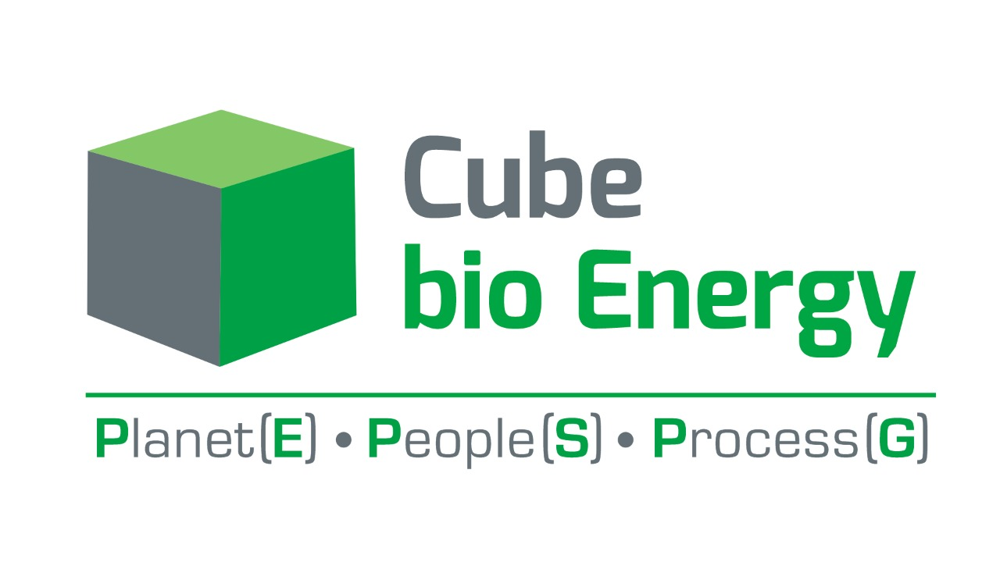

<!-- <div class="navbar">
    <mat-toolbar color="primary">
        <button mat-icon-button class="example-icon" aria-label="Example icon-button with menu icon">
            <mat-icon>menu</mat-icon>
        </button>
        <span>My App</span>
        <span class="example-spacer"></span>
    
        <button mat-button [matMenuTriggerFor]="aboveMenu">Above</button>
        <mat-menu #aboveMenu="matMenu" yPosition="above">
            <button mat-menu-item>Item 1</button>
            <button mat-menu-item>Item 2</button>
        </mat-menu>
    
        <button mat-button [matMenuTriggerFor]="belowMenu">Below</button>
        <mat-menu #belowMenu="matMenu" yPosition="below">
            <button mat-menu-item>Item 1</button>
            <button mat-menu-item>Item 2</button>
        </mat-menu>
    
        <button mat-button [matMenuTriggerFor]="beforeMenu">Before</button>
        <mat-menu #beforeMenu="matMenu" xPosition="before">
            <button mat-menu-item>Item 1</button>
            <button mat-menu-item>Item 2</button>
        </mat-menu>
    
        <button mat-button [matMenuTriggerFor]="afterMenu">After</button>
        <mat-menu #afterMenu="matMenu" xPosition="after">
            <button mat-menu-item>Item 1</button>
            <button mat-menu-item>Item 2</button>
        </mat-menu>
    </mat-toolbar>
</div> -->

<!-- <div class="container">
    <div class="navbar">
        
        <ul>
            <li>home</li>
            <li>about us</li><mat-icon>expand_more</mat-icon>
            <li>solutions</li><mat-icon>expand_more</mat-icon>
            <li>media & awards</li>
            <li>career</li>
            <li>contact us</li>
        </ul>
    </div>
</div> -->

<nav class="navbar navbar-expand-lg">
    <div class="container-fluid bg">
      <a class="navbar-brand" href="#"></a>
      <button class="navbar-toggler" type="button" data-bs-toggle="collapse" data-bs-target="#navbarSupportedContent" aria-controls="navbarSupportedContent" aria-expanded="false" aria-label="Toggle navigation">
        <span class="navbar-toggler-icon"></span>
      </button>
      <div class="collapse navbar-collapse" id="navbarSupportedContent">
        <ul class="navbar-nav me-auto mb-2 mb-lg-0 justify-content-end">
          <li class="nav-item">
            <a class="nav-link active" aria-current="page" href="#">Home</a>
          </li>
          <li class="nav-item dropdown">
            <a class="nav-link dropdown-toggle" href="#" role="button" data-bs-toggle="dropdown" aria-expanded="false">
              About Us
            </a>
            <ul class="dropdown-menu">
              <li><a class="dropdown-item" href="#">brief history</a></li>
              <li><hr class="dropdown-divider"></li>
              <li><a class="dropdown-item" href="#">vision & mission</a></li>
              <li><hr class="dropdown-divider"></li>
              <li><a class="dropdown-item" href="#">board of directors</a></li>
              <li><hr class="dropdown-divider"></li>
              <li><a class="dropdown-item" href="#">investors deck</a></li>
              <li><hr class="dropdown-divider"></li>
              <li><a class="dropdown-item" href="#">iec</a></li>
              <li><hr class="dropdown-divider"></li>
              <li><a class="dropdown-item" href="#">csr</a></li>
            </ul>
          </li>
          <li class="nav-item dropdown">
            <a class="nav-link dropdown-toggle" href="#" role="button" data-bs-toggle="dropdown" aria-expanded="false">
               Solutions
            </a>
            <ul class="dropdown-menu">
                <li><a class="dropdown-item" href="#">municipal solid waste</a></li>
                <li><hr class="dropdown-divider"></li>
                <li><a class="dropdown-item" href="#">biomining</a></li>
                <li><hr class="dropdown-divider"></li>
                <li><a class="dropdown-item" href="#">mrf (material recovery facilities)</a></li>
                <li><hr class="dropdown-divider"></li>
                <li><a class="dropdown-item" href="#">fecal sludge management</a></li>
                <li><hr class="dropdown-divider"></li>
                <li><a class="dropdown-item" href="#">industrail waste management</a></li>
                <li><hr class="dropdown-divider"></li>
                <li><a class="dropdown-item" href="#">biomedical waste management</a></li>
                <li><hr class="dropdown-divider"></li>
                <li><a class="dropdown-item" href="#">construction and demolition waste mangement</a></li>
                <li><hr class="dropdown-divider"></li>
                <li><a class="dropdown-item" href="#">integrated environmental services</a></li>
                <li><hr class="dropdown-divider"></li>
                <li><a class="dropdown-item" href="#">consultancy</a></li>
            </ul>
          </li>
          <li class="nav-item">
            <a class="nav-link" href="#">media & awards</a>
          </li>
          <li class="nav-item">
            <a class="nav-link" href="#">career</a>
          </li>
          <li class="nav-item">
            <a class="nav-link" href="#">Contact Us</a>
          </li>
        </ul>
        <div class="second"></div>
      </div>
    </div>
  </nav>